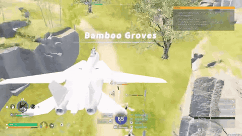
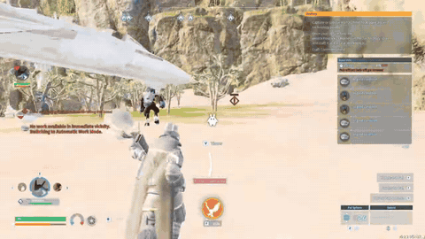
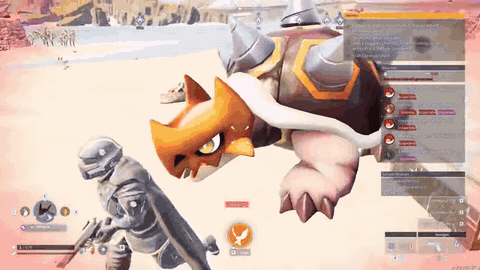
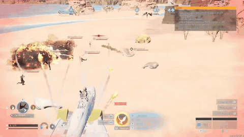
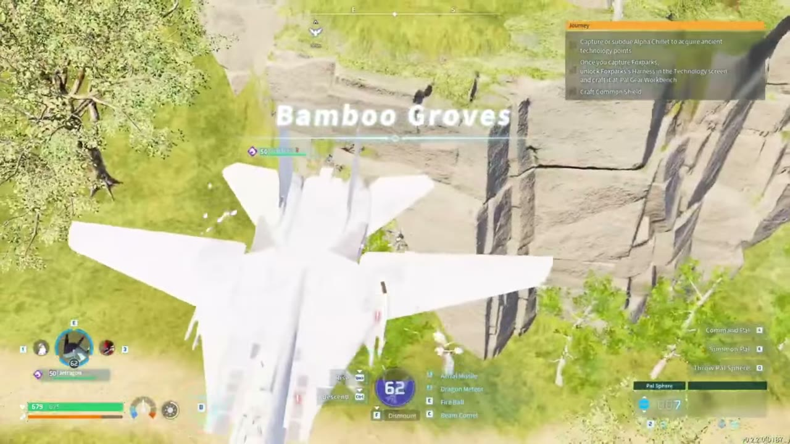

Palworld review: weird Pals and an F-14 fighter jet mod

F-14 through the Bamboo Groves
Palworld has you live alongside creatures called Pals, or fight off a poaching syndicate. Up to four people can play together. Pals can fight or work on farms and factories, and you can ride them across land, sea and sky.
In Part 3 of my solo modded run, I wore Helldivers-style armor, had red Ferraris and Statues of Liberty around my beach base, and replaced the Jetragon with an F-14 fighter jet mod you can ride and shoot. One Pal became a Rainbow Dash model and the Dumud became a plush whale-shark. A big chunk of the video is me holding up Pals one at a time and asking if they are cool. The first verdict was "This one sucks." The Bushi looks so much like a person that I called it concerning.

A Relaxaurus Lux with its head stretching off its body
I tried to lift a giant Digtoise and asked if it was mine. A single pistol shot made it swell and explode in a huge pink and orange blast, thanks to my mods. It was not mine. When I held up a Relaxaurus Lux, its head stretched right off its neck and I said, "Its head is just separating from the body." The Jetragon, now an F-14, kept dodging my grab, and when I finally lifted it, it was invisible in my hands.
Flying the F-14 over castle ruins, through a Bamboo Groves canyon and over Forgotten Island, I called cheating a little bit of an art form.

One pistol shot and a giant Digtoise explodes

An F-14 strafing the enemy camp on the beach

The F-14 in flight
The real draw was seeing how weird the Pals look up close. I barely touched the survival or base-building side, because the Pals and my mods were the whole point. Near the end I give a sarcastic speech: I could beat everyone and get every achievement, and then people would look at my profile and say I played a lot of Palworld.